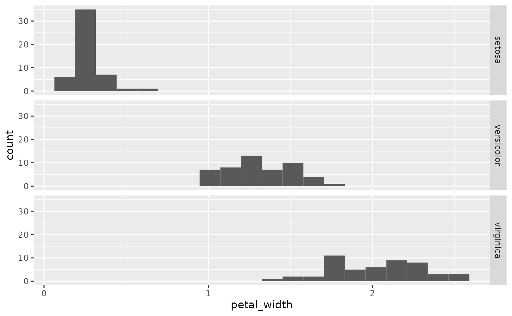
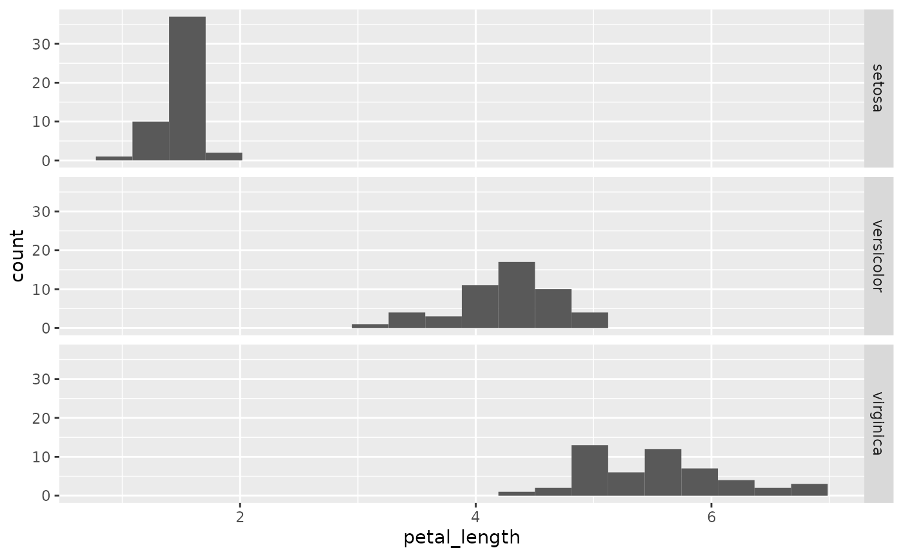

Introduction to genreclassifier
my-vignette.RmdThe genreclassification package makes exploratory data analysis for a classification project easier and more efficient:
- By cleaning your data as you read it in
- Counting the proportion of unique factors in the data
- Visualizing the tidied data with faceted histogram plots
Data : iris
For the purpose of this demonstration, we will be using the default
iris dataset from R.
data("iris")
dim(iris)
#> [1] 150 5
head(iris)
#> Sepal.Length Sepal.Width Petal.Length Petal.Width Species
#> 1 5.1 3.5 1.4 0.2 setosa
#> 2 4.9 3.0 1.4 0.2 setosa
#> 3 4.7 3.2 1.3 0.2 setosa
#> 4 4.6 3.1 1.5 0.2 setosa
#> 5 5.0 3.6 1.4 0.2 setosa
#> 6 5.4 3.9 1.7 0.4 setosaAlthough we are able to easily import this dataset using built-in R
functions, for the purpose of classification we will use the
classy_read() function for its convenient built in
functions.
You can see that this is the same dataset, obtained from a Github URL as is often done for reproducibility.
Be aware that in this version of the iris dataset,
the column names are slightly different.
iris_url <- ("https://gist.githubusercontent.com/curran/a08a1080b88344b0c8a7/raw/0e7a9b0a5d22642a06d3d5b9bcbad9890c8ee534/iris.csv")Read tidy data with classy_read()
Now, we will read it in with classy_read() in its
simplest form. The dataset is now read from the source as is.
The number of NaNs are summarized.
regular_data <- classy_read(iris_url, col = NULL)
#> sepal_length sepal_width petal_length petal_width species
#> 1 0 0 0 0 0
dim(regular_data)
#> [1] 150 5
head(regular_data)
#> sepal_length sepal_width petal_length petal_width species
#> 1 5.1 3.5 1.4 0.2 setosa
#> 2 4.9 3.0 1.4 0.2 setosa
#> 3 4.7 3.2 1.3 0.2 setosa
#> 4 4.6 3.1 1.5 0.2 setosa
#> 5 5.0 3.6 1.4 0.2 setosa
#> 6 5.4 3.9 1.7 0.4 setosaSpecify a col to convert a column to type
factor:
factored_data <- classy_read(iris_url, "species")
#> sepal_length sepal_width petal_length petal_width species
#> 1 0 0 0 0 0
dim(factored_data)
#> [1] 150 5
head(factored_data)
#> sepal_length sepal_width petal_length petal_width species
#> 1 5.1 3.5 1.4 0.2 setosa
#> 2 4.9 3.0 1.4 0.2 setosa
#> 3 4.7 3.2 1.3 0.2 setosa
#> 4 4.6 3.1 1.5 0.2 setosa
#> 5 5.0 3.6 1.4 0.2 setosa
#> 6 5.4 3.9 1.7 0.4 setosaOptionally provide additional parameters to select the relevant columns for your classification.
classy_data <- classy_read(iris_url, "species", species, petal_length:petal_width)
#> species petal_length petal_width
#> 1 0 0 0
dim(classy_data)
#> [1] 150 3
head(classy_data)
#> species petal_length petal_width
#> 1 setosa 1.4 0.2
#> 2 setosa 1.4 0.2
#> 3 setosa 1.3 0.2
#> 4 setosa 1.5 0.2
#> 5 setosa 1.4 0.2
#> 6 setosa 1.7 0.4Count proportions with count_propotion()
count_proportion checks the proportions of unique data
values in a column and the proportion of the data that each value makes
up.
prop <- count_proportion(classy_data, "species", "tidied")Display your exploratory data with create_faceted_hist_plot()
Two examples below show how you can use
create_faceted_hist_plot() to create faceted histogram
plots for each variable in rowand align them for EDA.
create_faceted_hist_plot(classy_data, "petal_width", "species")
create_faceted_hist_plot(classy_data, "petal_length", "species")